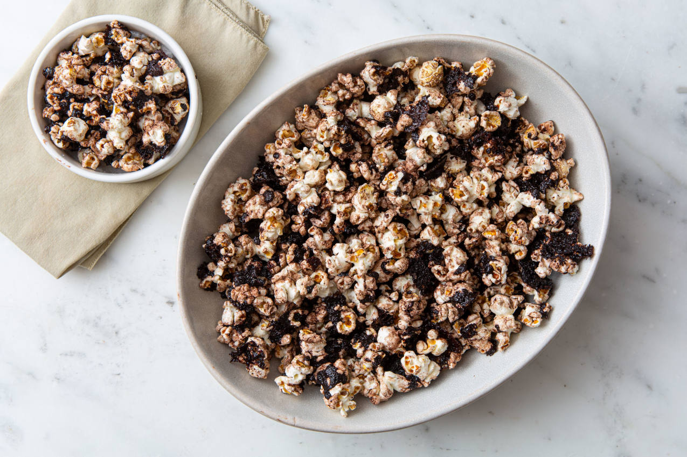

pipoca de chocolate
Ótima escolha, pipoca de chocolate é uma delicia mesmo. Agora vamos cozinhar!
Você vai precisar de:
- Milho para pipoca
- 7 colheres (sopa) de nescau
- 4 colheres (sopa) de açúcar
- 1 colher (sopa) de margarina sem sal
- 1/2 xícara (chá) de leite
Modo de preparo:
- Estoure a pipoca normalmente e reserve.
-
- Em uma panela, coloque o nescau, o açúcar, a margarina e o leite.
- Cozinhe em fogo alto.
- Mexa até todos os ingredientes se misturarem.
- Quando começar a ferver, diminua o fogo e deixe cozinhar até que a cobertura esteja grossa e homogênea.
- Jogue a cobertura sobre a pipoca aos poucos.
